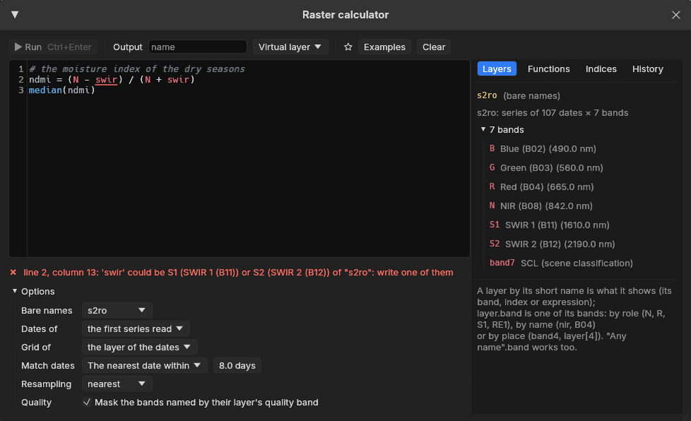
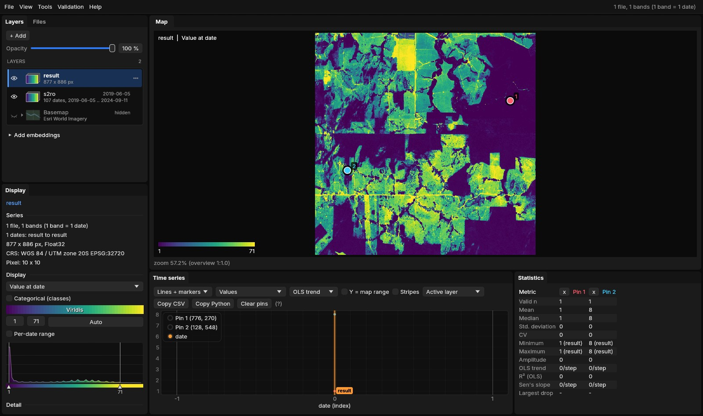
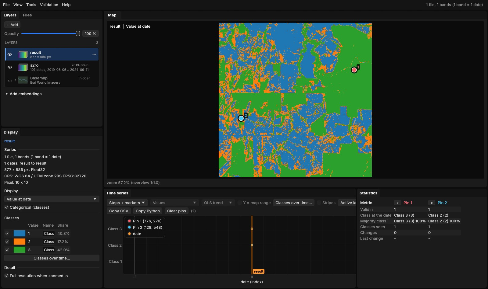

01The idea
A calculator in a GIS combines rasters cell by cell and writes a file before you see anything. Janus computes as it reads: an expression becomes a small program, compiled once and evaluated over blocks of 4096 pixels wherever the series is read, the map's overview, the tiles you zoom into, a pixel's series under the cursor, a region, a Zeit tool. Nothing is written until you ask for it.
- An index
- On the Display panel, the series shown as an index of its bands: EVI, SAVI, MNDWI, NBR, any of the 275 of the Awesome Spectral Indices the series has the bands for, or a formula of your own.
- The calculator
- Tools → Raster calculator...: an expression over every open layer, each by a short name, a series with an image, two series matched by date, a series reduced over time, rules. The result is a new layer.
02The data
The series of the STAC guide: Planetary Computer's Sentinel-2 L2A over a square of central Rondônia, Brazil, 8.8 km a side, the 107 dates from June 2019 to September 2024 whose scenes had 5% of clouds at most (most of them in the dry seasons), the clouds left masked by the scene classification (SCL). Here it was downloaded as GeoTIFFs: blue, green, red, NIR, the two SWIR and SCL, 877 × 886 cells of 10 m. The calculator works the same on the series read in place from the catalog; only the reading is slower.
Two pins follow the guide: pin 1 in a forest in the north-east (its NDVI around 0.8 every year), pin 2 in a pasture in the west (green in the wet months, lower every dry season: 0.18 at its lowest, in September 2024).
03An index on the series
The Display panel has, under the bands, Index or expression. Its list holds the indices of the Awesome Spectral Indices (Montero et al. 2023) the series can compute, searched by name or domain (vegetation, water, burn, urban, soil, snow). Each index names its bands by role: N the NIR, R the red, S1 the first SWIR, RE1 the first red edge. Janus finds the series' band for each role by its wavelength or its name (B08, NIR, nir08, SR_B5), so an index of Sentinel-2 works on Landsat too. Its constants take the catalogue's defaults (L = 0.5 for SAVI), its wavelengths (lambdaN) those of the series' bands.
![Janus with the Sentinel-2 series of Rondônia shown as EVI: the Display panel's Index or expression list on EVI, its formula 2.5 * (N - R) / (N + 6 * R - 7.5 * B + 1) below and the bands it reads (band 4 NIR as N, band 3 red as R, band 1 blue as B); the map of EVI at the first date between 0.13 and 0.68, fields in blue and green, forest in yellow; the chart of the two pins' EVI from 2019 to 2024, the forest's around 0.5, the pasture's between 0.25 and 0.7 every year; the title bar says EVI with QA SCL of each file.](assets/img/calculator/01-index.jpg)
The formula can be edited, or typed: 2.5 * (N - R) / (N + 6*R - 7.5*B + 1), nd(nir, swir1), (B08 - B04) / (B08 + B04). It is checked as you type, and Apply shows the series as the expression: the map at every date and in every mode, the chart, the pins, the region, the exports, the Zeit tools and Copy Python, which writes the same formula in numpy. From the command line: jn SERIES --expr EVI, or --expr "(N - S1) / (N + S1)".
The quality band still applies
The expression is computed from the bands with their scale and offset, then the quality band masks it: a cloudy date is no data in the EVI as in the NDVI.
04The calculator
Tools → Raster calculator... (or Open in calculator from the Display panel) opens a window with an editor on the left and, on the right, four lists: the open Layers with their short names and bands, the Functions, the Indices and the History.
![The Raster calculator window over Janus: a toolbar with Run (Ctrl+Enter), the output's name count_ndvi, Virtual layer, a star, Examples and Clear; the editor with three numbered lines, a comment, ndvi = (N - R) / (N + R) and count(ndvi < 0.4), coloured by kind; under it One image, 877 x 886 cells of 10 m (the grid of s2ro), Reads s2ro, Over time: count, and the options; on the right the Layers list, s2ro with its seven bands and their roles (B, G, R, N, S1, S2, band7 for SCL) and the new count_ndvi; the status says count_ndvi was added as a layer. Behind the window, the map of the result.](assets/img/calculator/02-calculator.jpg)
- Short names
- Each open layer gets one from its name (
s2,dem,l8); a band iss2.nir,s2.B08,s2.band4ors2[4], a roles2.N. Bare names (N,nir,B04) are the bands of the active layer, or of the layer chosen under Options. - As you type
- The text is coloured by what each name is (a layer, a band, a function, a variable of your own); a list completes names (Tab or Enter, Ctrl+Space to call it); the pointer over a name says what it is (a layer's dates and grid, a band's wavelength, a function's arguments); an error is underlined where it is, and clicking its message puts the cursor there.
- Before running
- Under the editor, what the result will be: a series of 107 dates or an image, its grid, its CRS, the layers read.
- Run
- Ctrl+Enter or Run. The text goes to the history; a star keeps it among the favourites.


swir fits two bands of this series; the message says where and what to write, and Run waits.05The language
One statement a line (or apart by ;), # for comments. A line name = expression names a value for the lines after it; the last line is the result.
| Write | Means |
|---|---|
+ - * / % ^ | arithmetic (** is ^) |
< <= > >= == != | comparisons: 1 or 0 |
&& || !, and or not | logic |
nd(a, b) | normalized difference, (a - b) / (a + b) |
where(c, a, b), coalesce(x, 0), clamp(x, lo, hi), in(x, 3, 4, 5) | choices: a where c holds; the first value that is not no data; limits; one of some classes |
bit(q, 3), bits(q, 8, 2), qa(x, q, "scl") | bits of a quality band; x where a quality code is usable ("fmask", "landsat_c2", "scl") |
sqrt abs exp log log10 round floor sin atan2... | mathematics |
nan, x == nan, isvalid(x) | no data, and the tests for it |
year month day doy decyear t | the date being computed (t its number, from 0) |
max(s) min mean median sum std count percentile(s, 90) | a series reduced over time to an image (section 06) |
argmax(s) first(c) last(c) longest(c) persist(c, 3) lag(s, 1y) s[-1] anomaly(s, base=, by=), s[2019-06 .. 2019-09], max(s) by year, mean(s, 90d) | dates, slices of the calendar, periods, windows, lags, anomalies, events (section 06) |
condition = value | a rule (section 07) |
No data is not a number that spreads: arithmetic on it gives no data, a reduction skips it, a comparison with it is no data, and coalesce or a rule x == nan = 0 fills it.
06Over time
A series has dates. An expression of a series is a series: (N - R) / (N + R) is a new value at each of the 107 dates. A reduction with one argument turns it into an image, over every date with a value:
# how many of the 107 dates had little vegetation
ndvi = (N - R) / (N + R)
count(ndvi < 0.4)

count(ndvi < 0.4) over the 107 dates; the forest of pin 1 once (the end of the 2024 dry season, its NDVI at 0.28), the pasture of pin 2 eight times, the most worked fields up to 71.With more than one argument the same functions work pixel by pixel at each date: max(B04, B03, B02) is the brightest visible band of each date. A series and its reduction mix: ndvi - mean(ndvi) is each date's departure from the pixel's mean, a series again; (ndvi - mean(ndvi)) / std(ndvi) its z-score.
Time is an axis of the language, counted in the series' real dates (an irregular series with clouds stays irregular, a masked date does not exist):
- The date of a value
argmax(ndvi)is the date of the pixel's largest NDVI (the peak of the season) as a decimal year,argminof the smallest;first(ndvi < 0.3 and year >= 2020)andlast(...)the first and last date a condition held. A result in years opens with a legend of years.- A slice of the calendar
median(ndvi[2019-06 .. 2019-09])reduces June to September 2019 alone;max(ndvi[2019 .. 2021])three years;mean(ndvi[11 .. 2])November to February of every year.- By year, by month
max(ndvi) by yearis a new series with one date per year,mean(ndvi) by monthone per month that has a date; they mix with each other (max(ndvi) by year - min(ndvi) by year), not with the dates they came from.- A window in days
mean(ndvi, 90d)is, at each date, the mean of the dates of the 90 days up to it (pandas'rolling("90D"));wcounts weeks,yyears.- The value before
ndvi[-1](orlag(ndvi, 1)) is the pixel's previous observation with a value, sondvi - ndvi[-1]is the change since;lag(ndvi, 1y)the value of the nearest date a year before (within half the usual step between dates).- The anomaly
anomaly(ndvi, base=2015..2019, by=month)is each date's z-score against the mean and the deviation of its month in the base years;by=doy, window=15dagainst the days of the year within 15 days.- Events
count(ndvi < 0.3)the dates below;longest(ndvi < 0.3)the longest it stayed below, in days;persist(ndvi < 0.3, 3)a series, 1 where the last three observations were all below.
Tick Live and the result is on the map as it is typed, at the overview's size, as a layer marked preview: a reduction is drawn as its dates are read (max so far: 23 of 107 dates), a series at the date shown. Tick Chart and under the editor are its values at the cursor (or the first pin): the result's series, or for an image its value as a level (a date as a time) with the values its reductions reduce; select a part of the text and its series is drawn too, so first(ndvi < 0.3) is seen falling on the date the NDVI crossed 0.3.
07Rules
A line condition = value changes the pixels where the condition holds and keeps the others. The result starts as the condition's first operand, or as what result = ... made it, and each rule works on what the rules before left:
# the median NDVI of the five years, in three classes
m = median(nd(N, R))
result = m
m < 0.45 = 1
m >= 0.45 && m < 0.7 = 2
m >= 0.7 = 3

Rules are short for where: img > 0 = 1 is where(img > 0, 1, img). So img == nan = 0 fills the gaps with 0, result == 0 = nan makes 0 no data, and img.band1 > 1 && img.band2 >= 5 = 0 zeroes a stack's pixels where two of its bands agree.
08Several layers
The expression may use any open layer, in any grid or CRS:
- A series and an image
- The image is used at every date:
s2.nir / dem,ndvi / max(ndvi). - Two series
- Matched by date (Options → Match dates): the same day, the nearest within some days (Sentinel-2 with Landsat), the same month or the same year. A date with no match is no data there.
- Another grid
- A layer of other cells (Landsat's 30 m with Sentinel-2's 10 m) is resampled onto the result's grid, a layer in another CRS reprojected; the result takes the grid of the layer chosen under Grid of, else that of the series whose dates it has.
- A stack
- One file of several bands that are not dates (a DEM with its slope, a classification with its probabilities) is an image whose bands are named:
terrain.slope,terrain.band2.
09The result
The result is a layer like any other: the map, the chart, pins, regions, the Zeit tools, exports. It is written in a folder of its own under %LOCALAPPDATA%\Janus\results\calc, as one of two things:
- A layer of VRTs
- The default: one small VRT per date whose band is computed by Janus's pixel function from the layers' files when it is read. It costs nothing to make; the map computes the overview and the tiles as it shows them.
- GeoTIFFs
- Write GeoTIFFs: the VRTs read once into cloud-optimized GeoTIFFs (DEFLATE, overviews), several dates at a time, as a task in Tools → Tasks. For a result to keep, to share or to open in another program.
The folder keeps the text and the layers it was computed from (calc.json) and the task's log. From the command line, jn SERIES --calc "max(nd(N, R))" --calc-run opens the series, runs the text and adds the result.
10Checked against the originals
The calculator was run against the Python libraries it stands in for, on the same files, comparing the values and the time each took (tools/bench_calc_vs_originals.py; the numbers in bench/calc-vs-originals.json). It was run on a 20-thread laptop, so the times move by about a tenth from one run to the next.
- The indices, against spyndex 0.12
- spyndex computes the same Awesome Spectral Indices catalogue with NumPy. All 184 indices that both can compute from six bands (two more need a second NIR band that spyndex does not default) were run over 2048 × 2048 random reflectances. Janus matched spyndex within 3 × 10⁻⁷ relative to its value (MSAVI the farthest, the rounding of single precision) and had no data on the same pixels. Together they took 3.7 s in Janus on one thread against 6.6 s in spyndex.
- The reductions, against xarray 2025.12
- A series of 48 monthly dates of 1024 × 1024 pixels with a fifth of every date clouded (NaN). xarray read the files with rasterio, Janus through the result's VRT as a GeoTIFF translation reads it; the times include the reading.
| Janus | In xarray | xarray | Janus | Faster | Largest difference |
|---|---|---|---|---|---|
max(s) | max("time") | 388 ms | 270 ms | 1.4× | 0 |
mean(s) | mean("time") | 806 ms | 188 ms | 4.3× | 2.4 × 10⁻⁷ |
median(s) | median("time") | 4609 ms | 489 ms | 9.4× | 0 |
std(s) | std("time") | 1169 ms | 449 ms | 2.6× | 6 × 10⁻⁸ |
count(s > 0.5) | (da > 0.5).sum("time") | 431 ms | 473 ms | 0.9× | 0 |
percentile(s, 90) | quantile(0.9, "time") | 103.8 s | 755 ms | 137× | 3 × 10⁻⁸ |
s - mean(s), the last date | (da - da.mean("time")) | 874 ms | 293 ms | 3.0× | 2.4 × 10⁻⁷ |
- Over time, against xarray and pandas
- An irregular series of 64 dates 16 to 20 days apart over three years, 512 × 512 pixels with a fifth of every date clouded. Janus's times include writing the result (the reductions read by several dates computed once into GeoTIFFs, as when the result is written out) and reading every date of it.
| Janus | In xarray, pandas | xarray | Janus | Faster | Largest difference |
|---|---|---|---|---|---|
max(s) by year | groupby("time.year").max() | 180 ms | 158 ms | 1.1× | 0 |
mean(s) by month | resample(time="MS").mean() | 310 ms | 336 ms | 0.9× | 0 |
mean(s, 90d) | pandas rolling("90D").mean() | 2839 ms | 1002 ms | 2.8× | 6 × 10⁻⁸ |
argmax(s) | idxmax("time") | 316 ms | 198 ms | 1.6× | 6 × 10⁻⁵ years |
anomaly(s, base=2020..2021, by=month) | a groupby("time.month") climatology | 502 ms | 928 ms | 0.5× | 4 × 10⁻⁴ |
median(s[2021-06 .. 2021-09]) | sel(time=slice(...)).median() | 205 ms | 34 ms | 6.1× | 0 |
s - mean(s), every date | da - da.mean("time") | 261 ms | 608 ms | 0.4× | 2.4 × 10⁻⁷ |
The dates in years differ by single precision (2021.5 is kept to about 10⁻⁴ of a year), the anomaly's z-scores likewise; where a month's base had no deviation xarray gives an infinity and Janus no data, and those pixels were left out. xarray holds the whole series in memory and subtracts it once; Janus writes and reads each of the 64 dates as files, so a series returned whole is slower, a reduction faster.
Every result had no data on the same pixels as xarray's. A count is a sum of comparisons, cheap for both; it is as fast as reading the 48 files, which is the same work on each side. xarray's quantile with NaNs sorts the values of every pixel one by one; Janus selects the rank in place.
On the map, an expression costs little over a band. Reading the overview of 24 dates of 2048 × 2048 pixels took 29 ms for a band, 65 ms for NDVI as a normalized difference, 76 ms for NDVI written as an expression, and 276 ms for EVI, whose three bands are read at every date. On the five years of Sentinel-2 of this guide, the count of section 06, count(ndvi < 0.4) over its 107 dates, is on the map in 2 s; a pin's value at the 107 dates takes under half a second.
11References
- Montero, D., Aybar, C., Mahecha, M. D., Martinuzzi, F., Söchting, M., & Wieneke, S. (2023). A standardized catalogue of spectral indices to advance the use of remote sensing in Earth system research. Scientific Data, 10, 197. The catalogue: awesome-spectral-indices (MIT); in Python, spyndex.
- Huete, A., Didan, K., Miura, T., Rodriguez, E. P., Gao, X., & Ferreira, L. G. (2002). Overview of the radiometric and biophysical performance of the MODIS vegetation indices. Remote Sensing of Environment, 83(1–2), 195–213.
- Hoyer, S., & Hamman, J. (2017). xarray: N-D labeled arrays and datasets in Python. Journal of Open Research Software, 5(1), 10.
- GDAL: VRT derived bands and pixel functions, gdal.org/drivers/raster/vrt.